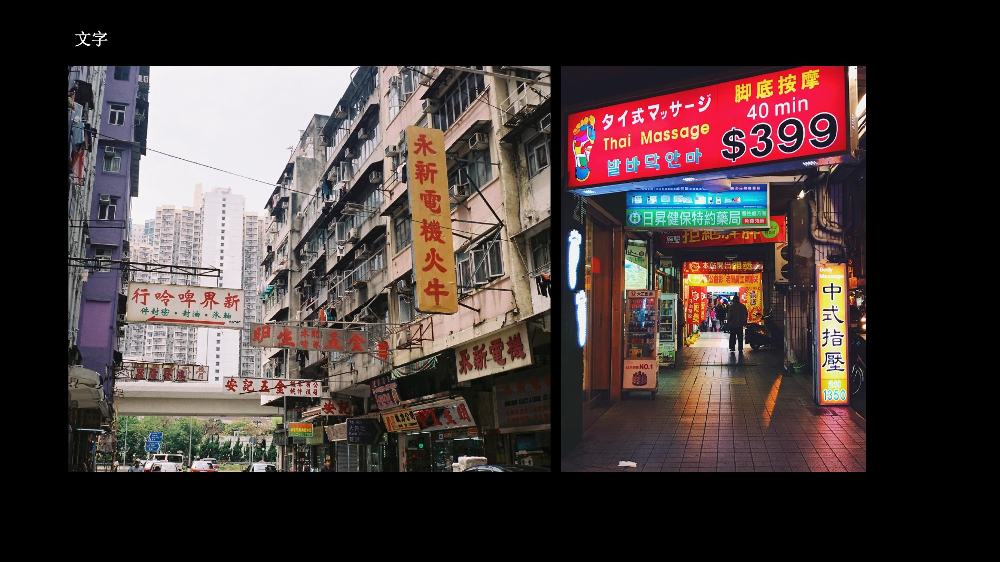
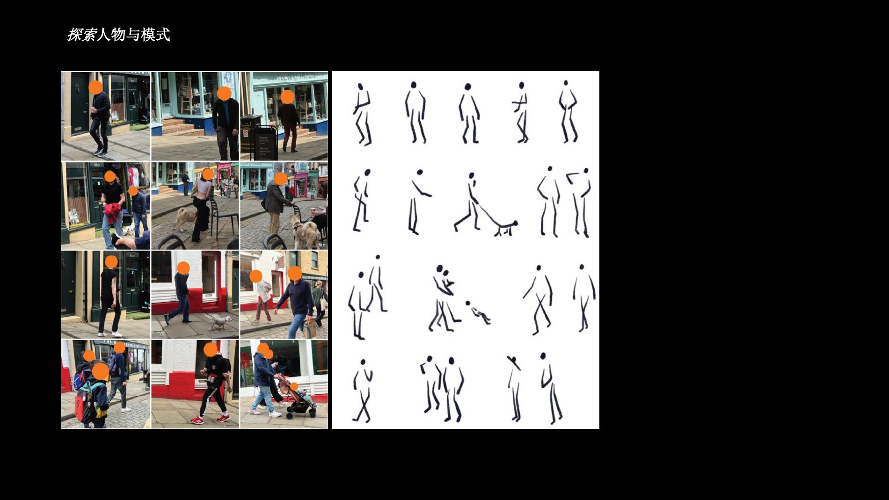
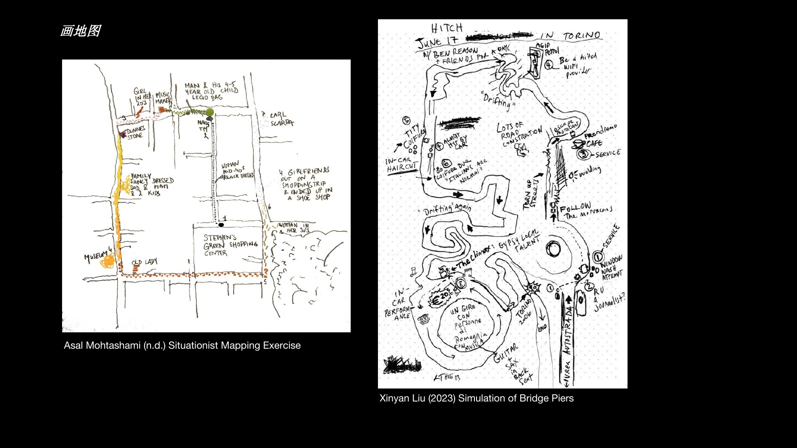

街头观察者调研手册
面对“去街上做调研”这样开放的任务，我编写了一份可以带到现场使用的手册。它从街头有什么、可以做什么展开，将文字、标牌、人物、纹理、声音和空间关系转成具体的观察与记录入口。
手册包含上海泰晤士小镇的行走方案，整理教堂、书店、艺术空间、码头和公共设施等点位。我把建筑形式、商业活动和不同使用者放在一起，作为观察同一场所的多个切入角度。








面对“去街上做调研”这样开放的任务，我编写了一份可以带到现场使用的手册。它从街头有什么、可以做什么展开，将文字、标牌、人物、纹理、声音和空间关系转成具体的观察与记录入口。
手册包含上海泰晤士小镇的行走方案，整理教堂、书店、艺术空间、码头和公共设施等点位。我把建筑形式、商业活动和不同使用者放在一起，作为观察同一场所的多个切入角度。


